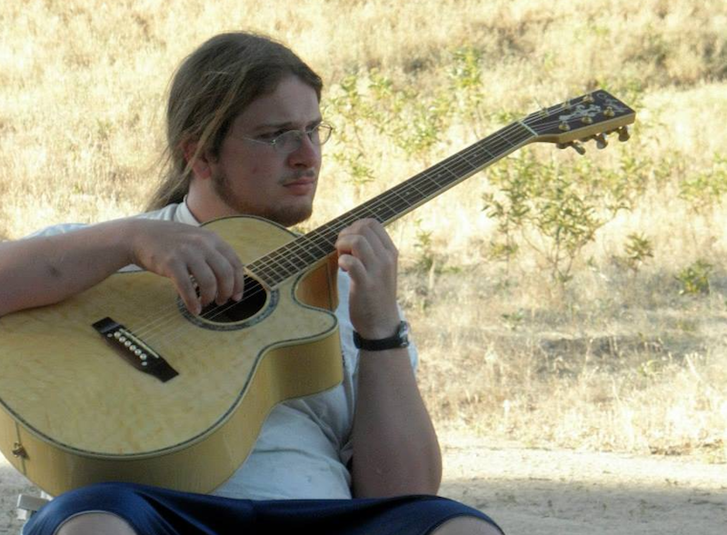
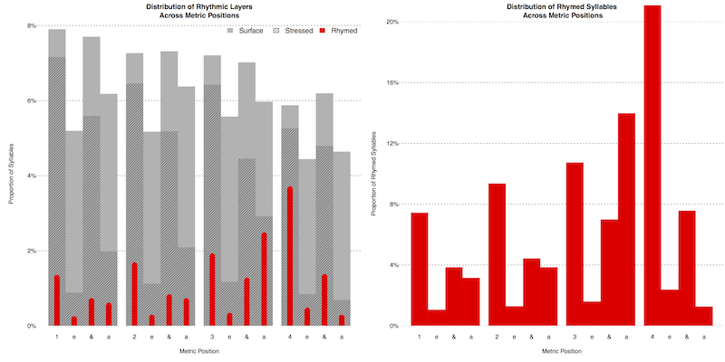
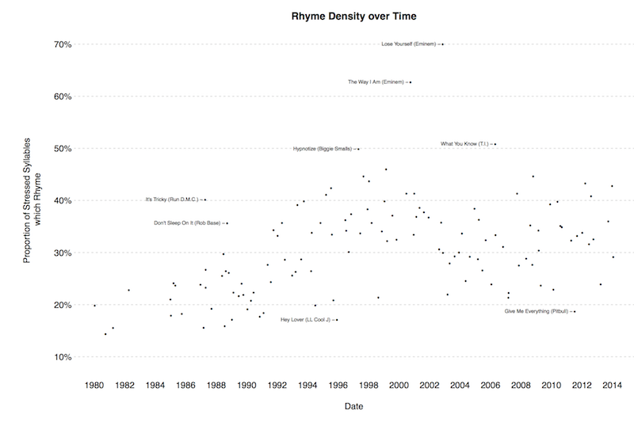

Introducing Nat Condit-Schultz
Posted by ehopkins on August 29, 2017
Nat Condit-Schultz began his work with the SIMSSA project as a CIRMMT Visiting Scholar in the summer of 2016, and now joins us as a new postdoc for our Analysis axis.
Emily Hopkins: Where are you originally from? What are some highlights: places you’ve lived, schools you’ve studied at, jobs you’ve done?
Nat Condit-Schultz: I was born and lived my earliest years in Massachussetts and New Jersey, but the first place I lived that I was old enough to remember was in the Republic of Panama. My dad worked as a biologist for the Smithsonian Tropical Research Institute in Panama (a US government project) for 25 years, and we lived there with him from when I was 3-9, and went back to visit frequently after that. We lived in a small town called Gamboa, which was built by the United States in the 1930s as a place for US engineers operating the Panama Canal to live with their families. Gamboa (see below) is nestled in deep rainforest, right where the Chagres river flows into the Canal.
Later, we lived in San Diego for a few years before eventually settling in Santa Cruz (about an hour south of Silicon Valley/San Francisco), where I lived from 14-25. While living in Santa Cruz, I attended Cabrillo College and the University of California Santa Cruz, where I completed a BA and MA in Music Composition. Later, I moved to Columbus, Ohio, where I completed a PhD at Ohio State University, studying with David Huron. Every job I’ve ever worked was as a musician!
EH: What’s your musical background?
NC-S: I am primarily a guitarist (see below), but I also play bass, drums, and keyboards. I started out entirely as a pop musician, playing in rock, pop and reggae bands. However, unlike a lot of pop/vernacular musicians, I learned to read music from the beginning. Before I even got very skilled at any instrument, I spent a lot of time composing music on the computer, using score-based software (like Sibelius) as well as more professional music sequencing programs (Reason, Sonar etc.)

I continued to focus on composition through my undergraduate and early graduate studies at the University of California Santa Cruz. At UCSC, I got to study with great algorithmic and computer-based music composers like David Cope, Paul Nauert and David Evan Jones. I also played a lot with UCSC’s Gamelan ensembles. For my Master’s thesis/performance, I composed a duet for Gamelan and fretless electric guitar.
In addition to playing in my own (mostly cover) bands, I played in the pits for a lot of local musical performances (mostly high school productions). I also taught rock/pop musicianship to teens and preteens in the Santa Cruz area–one group of kids I worked with twice made it to the finals of youth national battle-of-the-bands competition.
Finally, I worked a bit as a sound engineer/producer, which I studied at Cabrillo College. Working as the official recording engineer at UCSC, or in my own private studios, I recorded demos for a number of local bands, as well as my students’ bands.
EH: As a CIRMMT visiting scholar, you’ve already been involved in some of SIMSSA’s work here at McGill. Can you tell us more about that?
NC-S: I’ve been working with Yaolong Ju (McGill Music Technology PhD student and fellow SIMSSA researcher) on his harmonic-analysis/chord-tone identification project–mostly helping him checking and cleaning up the training data he has available. My primary project as a CIRMMT scholar is an ongoing project to add melodic transcriptions to McGill’s Billboard chord data corpus.
EH: When did you first start using computers as tools for music research? What are your favourite and least favourite things about this approach?
NC-S: I’ve long used computers for creating (and recording) music, but I only began using them to study music in the last year of my Masters study, and it wasn’t until my PhD studies that I really started to learn how to study music with computers. Dr. Huron is one of founding pioneers of what he calls “empirical and systematic musicology,” which includes computer-based corpus research, so I’ve had the honor of learning straight from a master. (see below for an example from Nat’s PhD dissertation, studying rhyme in rap music.)

I love the computer-based approach because I love music and music theory, and believe that is the best way to really dig into and understand music at a high level beyond studying individual pieces. Those of us trained by Huron learn to conduct research using scientific methodologies. I am passionate about bringing scientific rigor to humanistic questions, and computers are just one approach to this. However, using a computer and/or big datasets doesn’t automatically make research scientific; one can do “traditional” humanistic research with computers.
Key elements of scientific methodologies include: proposing and testing hypotheses, systematic random/unbiased sampling, doing statistical analyses (more below). The most important part of good research (scientific or otherwise) is critical thinking and skepticism–questioning theories, data, and conclusions, especially our own. We humans have a strong inclination to see what we want to see, and we have to work very hard to overcome and criticise our own innate biases: The scientific method is essentially formalized skepticism, aimed at helping us do just this.
EH: What was your experience of learning to code?
NC-S: Once I got started (when I was starting my PhD) I instantly became hooked. I find coding incredibly interesting–figuring out how to do things, then figuring out how to do it better, and the satisfaction of creating a program that works. I fell in love with the language R, which is a dynamically-typed, interpreted, “high-level” language (like Python), but it was designed specifically by scientists and statisticians specifically for doing data analysis.
EH: You know more about statistics than many musicologists. What’s one thing you wish everyone knew about stats?
NC-S: If you take random numbers and dig long enough for patterns in it, you will find some. Statistics is all about skepticism towards patterns in data–trying to figure out if what we find is really there, and not just noise. Unfortunately, I think that the way statistics are generally taught is extremely flawed. The emphasis is always on how to do a few basic tests, with no effort to help students understand the fundamental logic behind the tests. I don’t mean the math of it–You don’t need to know much math to do statistics, and in fact many of the mathiest parts of statistics can circumvented by doing computer simulations.
EH: You’ve done a lot of work with popular music styles, including rap. How do you think that perspective impacts your contribution to SIMSSA?
NC-S: The big difference between popular music–or “vernacular music,” which also includes folk music–and art music is that is not originally notated. There is no “score” , only transcriptions–(though in popular music the official studio performed recording of a song can take on the special status of “the score.”) If you work with vernacular music at all, you quickly realize how transcriptions of music are obviously, painfully, limited, incomplete, and biased–capturing only a tiny part of the reality of a musical performance, and typically only those aspects of the performance that the transcriber thinks matters. As a researcher, this realization informs my perspective when I do study score-based music: “scores” are only limited, incomplete, and biased guidelines for performing a piece, and they should be regarded with some skepticism!
At SIMSSA, we spend a lot of time and energy going from “original” musical scores to digital representations–which is a little like making a digital transcription of a paper score–and so all the methodological issues of transcription come into play. A great example, which I’ve become painfully aware of recently, is the lack of lyrics in most digital music corpora. Generally, researchers have assumed that the lyrics aren’t that important and haven’t bothered with them, which will inevitably shape any research that makes use of their data. (see below for an example of Nat’s previous work on Rhyme in rap music, from his PhD dissertation.)

EH: What’s up next for your first year as a SIMSSA postdoc?
NC-S: In terms of projects, I’ll continue to work with Yaolong on his harmonic-analysis project–my main role is going to be improving and expanding the Bach chorale dataset.
I’ll also be helping with the ACTOR project, which is being spearheaded by Stephen McAdams in the lab across the hall, but which is going to need significant support from those of us in DDMAL and ELVIS with more computer-based music research experience.
Finally, I’ll be aiming to conduct a new project of my own, related to lyrics and rhyme in popular and art music. I’m hoping to spend a lot of time this year working to add or improve lyric information in various ELVIS datasets, and conduct a specific project relating rhyme schemes to musical structures.